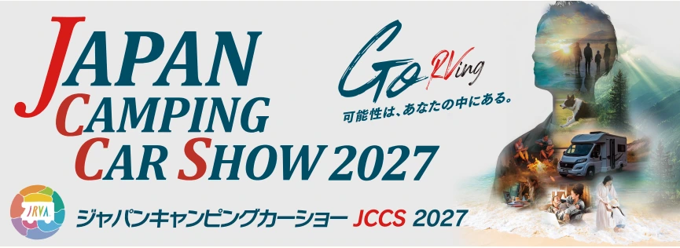
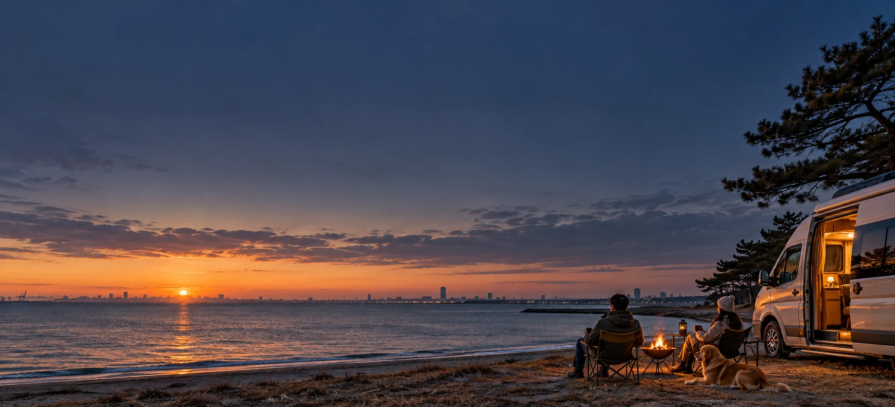
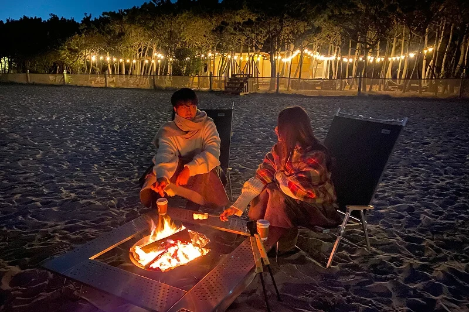
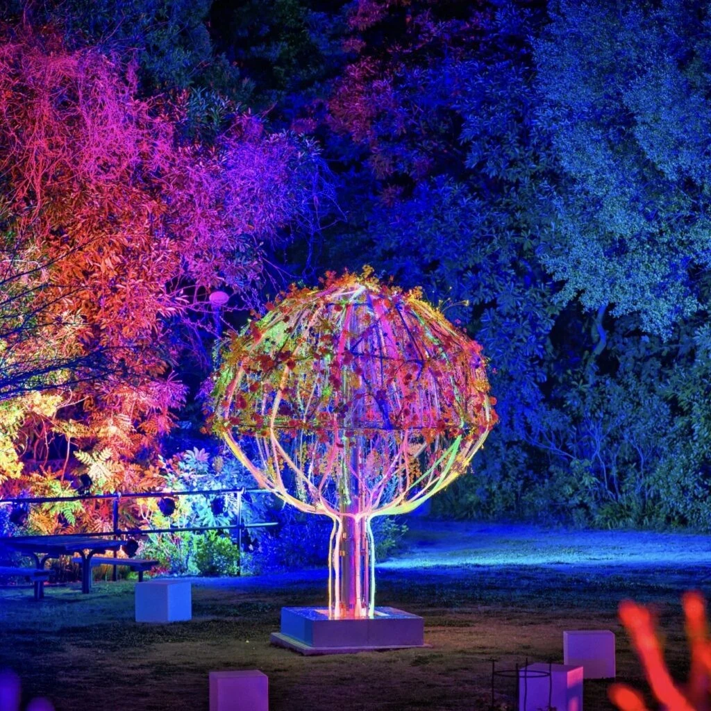
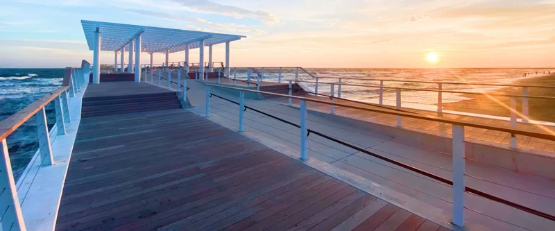
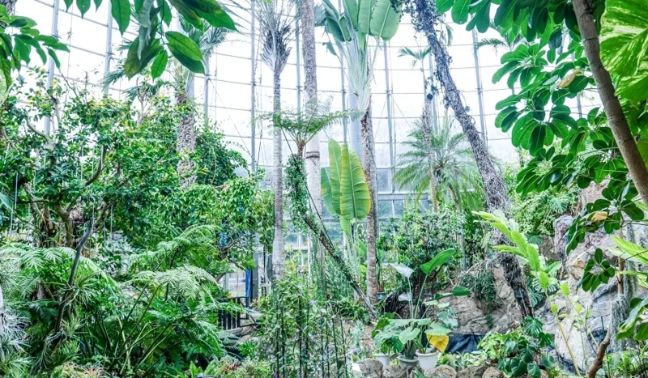
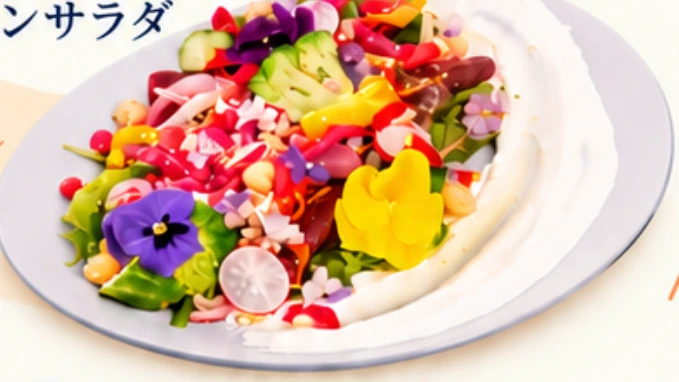
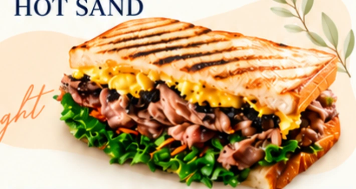

01
DAY 1 / DAYTIME気になる一台に、
気になる一台に、
会いに行こう。
お昼ごはんを楽しんだら、幕張メッセのジャパンキャンピングカーショー2027へ。クルマや旅の道具に出会い、次の旅を思い描く。
海浜公園への帰り時間は送迎バス時刻表をご確認ください。


車中泊・RV泊で楽しむ、海辺の週末。
クルマを停めたら、そこが旅の拠点。
夕日も、焚き火も。海辺で過ごす、もうひとつの休日。
PARK.
STAY.
PLAY.
ジャパンキャンピングカーショーを楽しんだら、
そのまま稲毛の海辺へ。
クルマを拠点に、桟橋まで夕日を見に行く。
火を囲み、おいしいごはんを食べる。
夜は植物と光の世界へ、足をのばす。
稲泊サンセットは、車中泊・RV泊を楽しむ宿泊イベント。
「泊まる」を足すだけで、いつものお出かけが小さな旅になる。
自分のペースで、海辺の滞在を。
JCCSと公園を楽しむ週末へ。
焚き火、食事、夜の寄り道。
気になるところへ、気ままに。
全部めぐっても、ゆっくり選んでも。


THE SHOW & YOUR NEXT ADVENTURE
写真は施設・体験のイメージです。
お昼ごはんを楽しんだら、幕張メッセのジャパンキャンピングカーショー2027へ。クルマや旅の道具に出会い、次の旅を思い描く。
海浜公園への帰り時間は送迎バス時刻表をご確認ください。

海へ伸びる桟橋を歩いて、空の色が変わるのを待つ。予定をいったん忘れて、ただ、海を眺める。
2月上旬は17時10分ごろが日没の目安。夕景は天候によって変わります。
いなげの浜・夕景を知る
薪がはぜる音を聞きながら、のんびりおしゃべり。夕食はOHANA BATAKEのHOT SAND。クルマ旅に、あたたかなひと休みを。
焚き火・火気の利用ルールは、ご予約前のご案内をご確認ください。通常の有料TAKIBIプランとは条件が異なります。
BOTANICA MUSEUMで植物と光を楽しむ。さらに足をのばすなら、幕張温泉 湯楽の里へ。好きな夜を選んだら、愛車の待つ宿泊スペースに戻ろう。
各施設の営業時間・利用条件と、宿泊パッケージのチケット対象条件をご確認ください。
BOTANICA監修のガーデンサラダで朝食を。浜辺を散歩して、駐車スペースは翌10時までに出発。出発後に立ち寄るなら、愛犬とのドッグランも。
ドッグランなど各施設は、それぞれの営業時間・利用規約をご確認ください。
ドッグランの利用条件
予定を詰めない時間も、
旅の楽しみ。
ごはんの時間も、楽しみのひとつ。
海辺の滞在に、ふたつのおいしさを。

BREAKFAST彩りを楽しみながら、朝をゆっくり始めよう。

DINNER海辺の夜に、おいしいひと休みを。
食事画像はイメージです。提供方法・時刻、お子さま分、連泊時の内容はご予約時の案内をご確認ください。初日のランチは宿泊パッケージに含まれません。
園内のレストラン・カフェも見る愛車と過ごす、海辺の1泊。
滞在にうれしい内容をまとめました。
駐車スペース利用料11:00〜翌10:00
JCCS 2027 大人入場券2枚
ボタニカミュージアムチケット2枚
シャトルバス送迎稲毛海浜公園⇄JCCS会場「幕張メッセ」
⇄近隣温泉施設へのシャトルバス送迎
朝食・夕食付きガーデンサラダ／HOT SAND
焚き火用の薪
ドッグランご利用無料施設の利用規約に準じます
施設・チケット・送迎の利用条件は、ご予約前のご案内をご確認ください。
宿泊する公園から、ジャパンキャンピングカーショーへ、温泉へ。
それぞれの場所を確認して、旅の準備を。
サンセットロード・多目的広場
千葉県千葉市美浜区高浜7-2-2
ジャパンキャンピングカーショー2027
JCCS開催：2月5日〜8日
JFA夢フィールド 幕張温泉 湯楽の里
公園外の施設です。
地図は各施設への一般案内です。宿泊者用の入口・受付場所、入退場経路、送迎バス時刻表は、ご予約前のご案内をご確認ください。
千葉市場の市民感謝デーは原則第2・第4土曜日。2月6日（土）は通常の対象日ではありません。2027年の開催予定・各店舗の営業は公式案内をご確認ください。
いつもの愛車と、忘れられない週末へ。
宿泊プランを見る INAHAKU SUNSET 2027 / 02.05 FRI — 02.07 SUN23,100 円（税込）